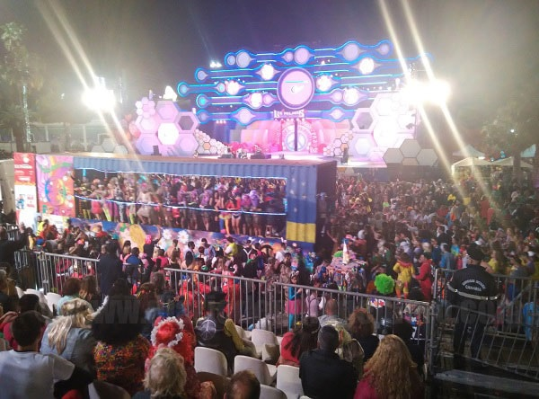
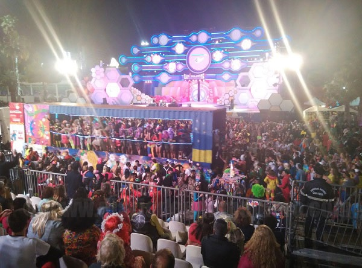
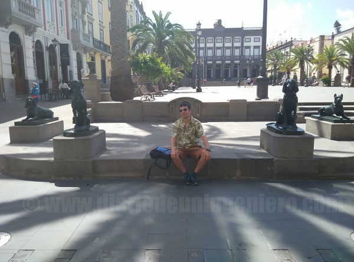
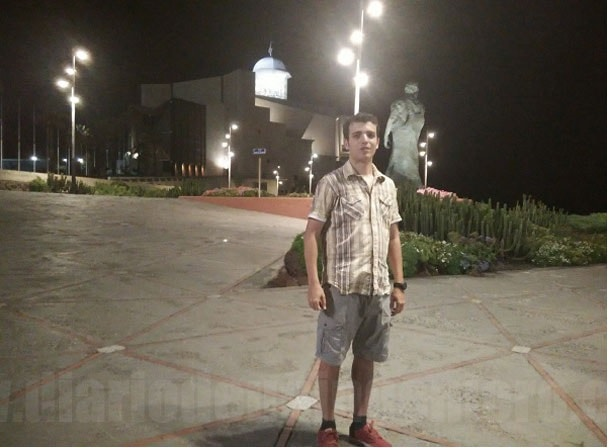
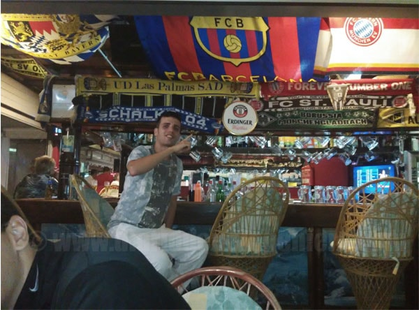

img class="img_fluid right_s rounded " src="imags/blog/blog17/canarias_casa_airbnb2.jpg" alt=canarias_casa_airbnb2 />
In February of 2017 I will go to Canarias to know the islands.
I have been already twice but it is not the same go for tourism one week than going to live. In fact is totally different.
With the goal of doing superior studies, will move to the capital, Las Palmas de Gran Canaria.
I began in the north of the capital in Las Canteras Area, near of the leisure and beach area and not far from the town center.
img class="img_fluid right_s rounded " src="imags/blog/blog17/canarias_casa_airbnb2.jpg" alt=canarias_casa_airbnb2 />
In February of 2017 I will go to Canarias to know the islands.
I have been already twice but it is not the same go for tourism one week than going to live. In fact is totally different.
With the goal of doing superior studies, will move to the capital, Las Palmas de Gran Canaria.
I began in the north of the capital in Las Canteras Area, near of the leisure and beach area and not far from the town center.
Through AirBNB, website see with bad eyes from Hotel companies, I reseve a bedroom.
I was living with two bugarian students very friendly, very fan of all spanish things.
I was speaking english and giving advice about spanish traditions and spanish language.
Theorically, AirBNB has a business space than hotel companies does not offer. Is a place where you can easily find a place to sleep without luxury conditions, and for people like me is ideal. Pay more than 50 euros for a hotel where you do not go to stay more than sleep is waste your money today. More in the economic conditions where are the young spanish people. That is very useful where you go to a place with the goal to do some papers or to spend time to find a place to live long term.
That is why a lot of people offer his house to particulars and economically is good. Big people, politicians, they like that we believe that AirBnb are pirates than steal to Spain but that is not real. The only fact is people travel because AirBnB, some people who cannot do in normal conditions and spend some money where they go.
 
With less more than 15 euros the night I was living in an appartment with european people.
While i was there I was looking for a place cheaper to stay more months there and I did not spend more than 1 week in that.
I could walking n the beach of Canteras but most of the days it was not allow to get into the wather due to jellyfish and strong waves.
In addition to that I could enjoy in February to the canarian carnival.
Good month for surfing, bad month for the bath.
I coincided in full flood of the Canarian carnival reason why the streets were always overflowing with charanga and people.
The temperature is quite pleasant although at this time of the year half of the days in Las Palmas is cloudy.
That is why there is great contrast with the south of the island, where the sun shines almost every day of the year.

With less more than 15 euros the night I was living in an appartment with european people.
While i was there I was looking for a place cheaper to stay more months there and I did not spend more than 1 week in that.
I could walking n the beach of Canteras but most of the days it was not allow to get into the wather due to jellyfish and strong waves.
In addition to that I could enjoy in February to the canarian carnival.
Good month for surfing, bad month for the bath.
I coincided in full flood of the Canarian carnival reason why the streets were always overflowing with charanga and people.
The temperature is quite pleasant although at this time of the year half of the days in Las Palmas is cloudy.
That is why there is great contrast with the south of the island, where the sun shines almost every day of the year.
In the end I found a quite asquible accommodation in the area of Alcaravaneras where I would settle.
This area is quite expensive, sticking with Mesa and Lopez and the marina.
In it is also the central market where you can buy fresh vegetables and fruits and the best meats from the peninsula.


 From there I was visiting the palms, starting by taking a walk on the island and see the maginifica beach of the confital and the surf in its purest form as well as some old structures that are built next to the rocks.
Visit the pier, shopping center near Santa Catalina, etc.
Once there apart from the leisure and beach that gives the islands, I was studying to revalidate my title of IETLS, where I got the B2 in April by lowering my C1 / B2 mark.
I also report the masters of the university of las palmas, specifically the master's degree to be able to attend the following year.
There were many papers that had to be submitted and a very thorough selection process where only 25% of those who applied obtained a place.
From there I was visiting the palms, starting by taking a walk on the island and see the maginifica beach of the confital and the surf in its purest form as well as some old structures that are built next to the rocks.
Visit the pier, shopping center near Santa Catalina, etc.
Once there apart from the leisure and beach that gives the islands, I was studying to revalidate my title of IETLS, where I got the B2 in April by lowering my C1 / B2 mark.
I also report the masters of the university of las palmas, specifically the master's degree to be able to attend the following year.
There were many papers that had to be submitted and a very thorough selection process where only 25% of those who applied obtained a place.
 On this occasion I was living with some girls from southern Italy and with Italian people in general.
Also in the Canary Islands I have cousins that I had not seen much before and that I had the pleasure of knowing more thoroughly.
Living in the Canary Islands one realizes how is the day to day of the people there. The city has a slow pace, but there is always activity.
In addition, the quality of life is well above in general to that of any city in the peninsula.
Forgetting one of them is Monday or Saturday because any day of the week offers the same characteristics to enjoy.
More than half of the work in the city is aimed at catering and catering, which means that almost more than half of them work in shifts.
This means that every day can be like a weekend and miss the notion of time apart from that there is basically a season throughout the year but with some connotations
On this occasion I was living with some girls from southern Italy and with Italian people in general.
Also in the Canary Islands I have cousins that I had not seen much before and that I had the pleasure of knowing more thoroughly.
Living in the Canary Islands one realizes how is the day to day of the people there. The city has a slow pace, but there is always activity.
In addition, the quality of life is well above in general to that of any city in the peninsula.
Forgetting one of them is Monday or Saturday because any day of the week offers the same characteristics to enjoy.
More than half of the work in the city is aimed at catering and catering, which means that almost more than half of them work in shifts.
This means that every day can be like a weekend and miss the notion of time apart from that there is basically a season throughout the year but with some connotations
Even having an unemployment rate that doubles many areas of the peninsula close to 30% people live quite alien to this situation.
Apart from the fact that around 30% of the population is always traveling from Europe or the peninsula, the treatment between people is quite cordial and hardly any unpleasant events occur.
Even more counting the amount of party sites and bars where alcohol or other items are served.
In the islands there is no very complex communication system between cities. Gran Canaria has a highway that connects the north with the southwest.
It is planned to finish the ring on the island but with what there is at this moment it is more than enough.
The king transport system is the bus, what we call here bus.
The island has innumerable bus lines that connect the cities with each other and in the capital the neighborhoods with the main station of San Telmo.
With the yellow card of transports for just over 6 euros and 45 minutes of travel you can move from the capital to Maspalomas or Playa del Ingles, the best areas to enjoy the sun and the beach.
The island has an offer in a very wide frame, from visits by the historical helmet, the great amount of beaches in its numerous kilometers of coast. As well as nightlife as well as rural tourism and nature or sports activities.
The historic center of Las Palmas is located in the neighborhood of Vegueta, southwest of the city.
Because the Spaniards did not arrive until the 15th century, almost all the buildings are colonial style, very similar to the one we can find in South America.
Of the city and this I speak in more detail in the section of the Canary Islands, in My Sites.
The important towns from the point of view of artistic heritage are the following:
Todas estas ciudades se encuentran al interior de la isla y el tiempo varía dependiendo de la época del año mucho más que en Las Palmas.


The island is one of two sites in Spain where from the point of view of size we have such a varied offer.
Due to its location and its climate you can practice nautical activities all year round, such as diving, windsurfing, canoeing, etc.
The island has great winds east west, and the north, there are areas of sea where it is dangerous to bathe but for professionals of these sports, are very suitable places.
The city of Las Palmas since 2003 has a new stadium with a capacity of 55,000 spectators, which is still being updated to new times, the Canary Islands also being a very footballing place.
There I was able to enjoy together with my cousin the league match that faced Union Deportiva Las Palmas against Atlético de Madrid, a match that ended with the Atlético victory, my team with an overwhelming 0-5.

In Gran Canaria there is a multitude of places to enjoy at night, although it should be emphasized three areas.
- Las Canteras, and specifically near the auditorium Alfredo Kraus, and the Las Arenas shopping center, with several pubs and squares where you can have a drink.
- Santa Catalina, next to the pier, with nightclubs that close later and where there are enough foreigners.
- Vegueta, near the historic center, where it is mainly young people who move, and especially students of the university. Very popular on Thursdays and Fridays.
To the south of the island is the largest tourist city of all the islands where there are several of the best clubs.
While it is not comparable to the party in the Balearic Islands if it is true that this area does not stop throughout the year, due to the good weather.
Main clubs such as ZigZag, Dubai or Pacha.
The latter is quite small and not comparable to other pachas, being also the entry very restricted according to when it suits them.
Lo mejor sin duda son las fiestas de los pueblos donde se puede disfrutar del ron autentico de la isla y de talleres de meridaje de ron.
Además los precios son muy bajos en todo y la gente bastante más agradable que en la costa o en la capital.
Sin embargo como todas las fiestas de patrones son un fin de semana al año.
Debido a la gran cantidad de pueblos la oferta es amplia.
Aqui debajo dejo una foto de Maspalomas, la playa más bonita de toda Las Palmas y una de las mejores de las islas canarias junto con las de Fuerteventura.
© 2016 - All Rights Reserved - Diseñada por Sergio López Martínez
![[Valid RSS]](https://www.feedvalidator.org/images/valid-rss-rogers.png "Validate my RSS feed")